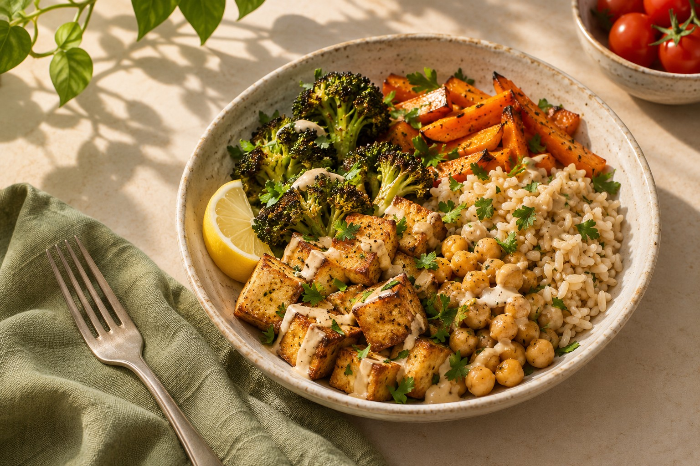

Elige cuándo cocinas.
Selecciona los días y las comidas que quieres planificar. Añade las preferencias, alergias y tiempo de cocina de tu hogar para orientar las ideas.
Para hogares veganos. Y quienes quieren serlo.
¿Ya eres vegano o quieres dar el paso a una vida totalmente vegana? LeafChef ayuda a tu hogar a hacer de la cocina vegana un hábito cotidiano. Planifica platos que te apetezcan, aprovecha tu despensa y compra lo que falta.
Para Android · Actualmente en pruebas privadas

Tu semana empieza contigo
Cenas entre semana, comidas de fin de semana o algunos platos entre medias. Elige los días y las comidas que quieres que LeafChef planifique y conserva tu semana habitual como punto de partida para futuros planes.
Deja las demás casillas sin seleccionar. El plan de tu hogar sigue la rutina de cocina que elijas.
Prueba a seleccionar las comidas que quieres planificar.
4 comidas en 3 días
Ejemplo interactivo de las opciones de rutina semanal de la app. Los cambios se quedan en esta página y no se guardan en LeafChef.
De «¿qué cenamos?» a «vamos a cocinar».
Dar el paso a una vida totalmente vegana es más fácil cuando sabes qué cocinar y qué comprar. LeafChef reúne ideas de platos veganos, tu despensa y la compra en torno a los días que quieres cocinar. Crea una rutina duradera o simplifica la rutina vegana que ya disfrutas.
Recreaciones del diseño actual de Android en modo claro, con la tipografía y los iconos de la app. Datos de ejemplo; no son capturas de pantalla.
No hay recetas planificadas
Elige otro filtro o añade un artículo del hogar.
El plan semanal, organizado por días.
Una rutina vegana a tu medida
¿Empiezas en la cocina vegana? Elige las comidas que quieres planificar y avanza desde ahí hacia una cocina totalmente vegana.
Selecciona los días y las comidas que quieres planificar. Añade las preferencias, alergias y tiempo de cocina de tu hogar para orientar las ideas.
Revisa el borrador de comidas veganas. Cambia los platos que no te apetezcan y descubre recetas que querrás repetir.
Revisa tu lista de compra, cocina siguiendo tu plan y marca los platos como cocinados para mantener tu cocina al día.
La vida vegana empieza en casa
Tanto si vuestro hogar ya es vegano como si estáis dando el paso juntos, cocinar a diario es un esfuerzo compartido. Reunid el plan de comidas veganas, la despensa y la lista de compra en vuestros móviles para que todos podéis participar.
Algunas buenas preguntas
Sí. La cocina vegana es el centro de LeafChef. Está pensada para hogares veganos y personas que quieren ser totalmente veganas, con planificación de comidas veganas, gestión de la despensa y compra compartida en un solo lugar.
LeafChef te ayuda con la planificación diaria: decidir qué platos veganos cocinar, aprovechar los ingredientes que tienes y saber qué comprar. Empieza por los días y las comidas que quieres planificar, encuentra platos que disfrutes y crea una rutina de cocina vegana a tu ritmo.
Sí. En las comidas semanales, selecciona los días y tipos de comida que quieres que LeafChef planifique: desayuno, comida, cena o tentempié. Puedes mantener tu rutina semanal habitual como punto de partida para futuros planes y dejar otras comidas sin seleccionar.
LeafChef utiliza IA para sugerir recetas y borradores semanales según las preferencias de tu hogar. Revisas el borrador y puedes sustituir platos individuales antes de aplicar el plan.
Sí. Los miembros del hogar comparten despensa, lista de compra y plan de comidas. Actualmente LeafChef se prueba en el día a día en dos móviles Android.
Actualmente LeafChef es una app de Android en pruebas privadas en un hogar. Todavía no hay descarga pública ni versión para navegador. Esta web presenta la app; no se conecta a los datos de tu cocina.
A fuego lento
LeafChef está en pruebas privadas en un hogar con Android. Cocinamos con ella, aprendemos de rutinas reales y la mejoramos antes de un lanzamiento más amplio.